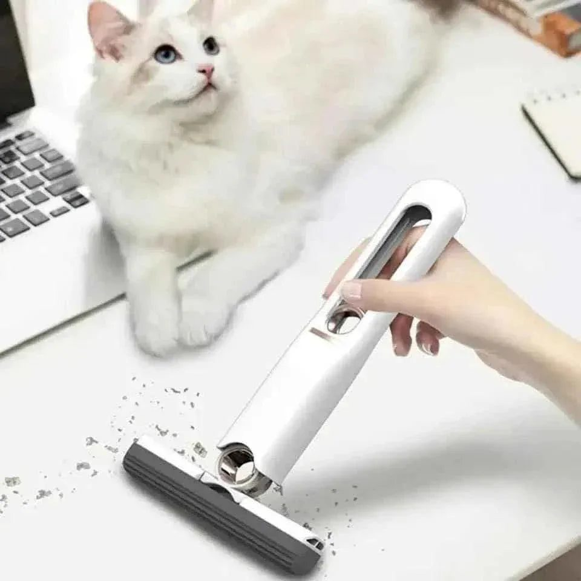

Eid ul Adha is the busiest time of the year in many Pakistani kitchens. For three days, meat is cut, portioned, distributed, frozen and cooked in large quantities. Kalegi on day one, karahi and BBQ after that, endless chai for visitors. By the end, the kitchen has seen more oil, smoke and traffic than in a normal month.
Once the guests have left and the meat is safely in the freezer, it is time to reset. Here is a step-by-step plan to make it manageable.
Step one: deal with the fridge and freezer
Start with food safety. Check that all meat is properly packed and labelled, ideally in portion-sized bags with the date and cut written on each. Remove any meat that was left out too long or that you are unsure about. Wipe up any blood or juices in the fridge and freezer with warm soapy water, then dry.
Organise the freezer so the oldest meat is at the front. Note roughly what you have, so you plan meals over the coming weeks rather than finding forgotten packets months later.
Step two: tackle the stove and hob
Days of frying and karahi leave stubborn grease. Remove burner caps and grates and soak them in hot water with dish soap. After soaking, a stiff brush removes most of the residue. For the stove surface, use a degreaser or a paste of baking soda and water, leave it for a few minutes, then wipe off.

Step three: the walls and backsplash
Grease spatters travel further than you think. Wipe tiles around the stove with warm soapy water. Pay attention to grout lines, where a small brush helps. Check the exhaust fan or hood filter, which often needs soaking in hot soapy water after a heavy cooking period.
Step four: cutting tools and boards
Knives, choppers, boards and the meat grinder all need thorough cleaning. Wash boards with hot soapy water and let them dry completely. A wooden board can be scrubbed with salt and lemon to freshen it. Sharpen knives that have dulled after days of cutting.
Step five: floors and corners
Floors take the most punishment during Eid. Sweep thoroughly first, including under appliances. Mop with hot water and a disinfectant floor cleaner. A small mop gets into tight corners and behind the fridge. Rotating brushes reach under cabinets and around the base of the counter where grime collects.
Step six: dusters, cloths and towels
Kitchen cloths used during Eid are often beyond saving. Replace the worst ones and wash the rest in hot water. Microfiber cloths are absorbent and reusable, and are good for wiping counters and drying surfaces streak-free.
Step seven: deal with smells
Lingering smells of meat and smoke can stay for days. Open windows and run the exhaust fan. Boiling water with lemon slices, cloves or cinnamon for a while freshens the air. Empty and wash the dustbin, and sprinkle a little baking soda in the bottom before adding a new liner.
Step eight: the sink and drains
Fat from cooking and meat washing can build up in the kitchen drain and cause blockages or smells. Avoid pouring oil down the sink. Instead, let it cool and dispose of it in a container. Flush the drain with very hot water, then pour baking soda followed by vinegar, wait for the fizzing to settle and rinse with hot water again. Scrub the sink and taps until they shine.
Divide the work
A deep clean is easier when the whole family helps. Assign tasks: one person on the fridge, one on the stove, children on wiping cabinet doors and putting things away. Spreading it over two days makes it less tiring.
Stock up for next time
After the clean, note what supplies you ran out of or what tools would have made Eid easier. Restocking now means you are ready for next year.
Cleaning tools
For rotating brushes, mini mops and microfiber cloths, Trenducts stocks practical cleaning essentials, delivered across Pakistan.
A fresh start after the festival
Eid ul Adha is about sacrifice, sharing and family. A thorough post-Eid clean restores the kitchen so ordinary cooking can resume in a fresh, hygienic space.